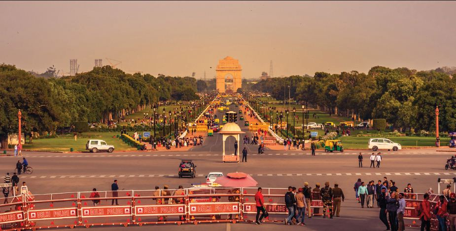
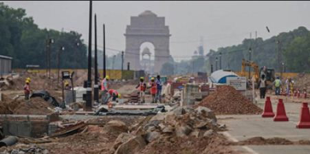
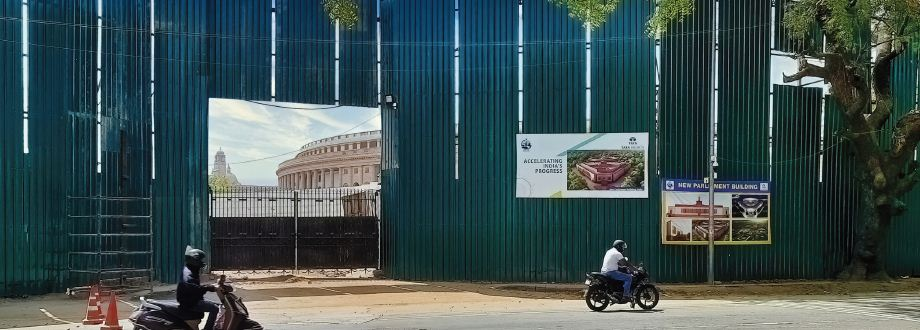

Story to be sung: Central Vista Project A Nation Building its own Heritage with indigenous thought
An independent country and sovereign power does take some decision which glorifies their existence and stands. And it is natural because they take decisions which are more appropriate to translate their idea of governance and appearance, and, here no one can interfere in it. But if it is a democratic setup then the government is bound to take all the decisions ‘in public interest’.
In Indian context and particularly with reference to Delhi which was ruled by many dynasties and rulers as well as governments right from its inception has experienced many changes in its figure & shape. Delhi has witnessed many architectural changes in different time epoch. If in Mahabharata period (c.1500 BCE) Pandava made their capital Indraprastha then in the last the British made Lutyen’s Delhi their capital. During the reign of Rajput rulers & dynasty be it of Tomar or Chauhan they established their own capital and carried out specific architectural activities and these are substantiated by the archaeological remains and studies.
Similarly during Sultanate period be it Ghulam, Khalji, Tughlaq, Sayyid, Lodhi they constructed their own fort or capital in the same geographical region. In Mughal period Shahjahan shifted his capital to Delhi after developing a new township known as Shahjahanabad and finally the British made Lutyen’s Delhi the present seat of power. That’s why Delhi is known as Indraprastha, Dilli/Dhilli or Yognipura, Lal Kot, Qila Rai Pithora, Siri, Dinpanah, Tughlakabad, Firozabad, Shergarh, Shahjahanabad and New Delhi respectively during different time zones or periods. What is important to understand here is that Delhi has been subject to change as per need or show off the ruling clan or power? Controversies and projects have been travelling together in India before and after independence whether it was pro public or display the might of the power convenient to the government. But it is an historical fact that projects were completed amid opposition of political parties or a section of the public by using the might of power. These projects are supposed to be a mirror of their foresightedness towards futuristic plan as per demand and need of time. And the controversy surrounded around Central Vista Project is no exception though the ruling party claims that it is in public interest.
Hon’ble HC Delhi passed a judgement: “The whole Central Vista is an essential project of national importance where the sovereign functions of the Parliament will be conducted. The public is widely interested in this project.”
Question arises as to why there was need to conceive a project known as Central Vista Project when Lutyen’s Delhi has many architectural remains in the use & service of public and government ? The people of India have all right to know it because this project will have to be completed with the financial support of exchequer. Some section of society and political system were agitated due to their love and belongingness with their heritage, some rumour, and false information etc. about the project. Many things and doubts are cleared by a specific Order of Hon’ble High court and a Press Conference by the hon’ble Minister of Government of India. One important concern was about the demolition of existing building of the National Museum and National Archives of India which were constructed after long deliberation before and after independence as an important ingredient of Lutyen’s architectural plan. This too was addressed in an official Press Conference by the representatives of the ruling party. But the wish and will of all the heritage lovers around the globe is that land mark place must not be uprooted, disturbed or demolished just to show the muscles of might of power or satisfy the ego. Thus present building of National Museum and National Archives of India shall be accommodated and adjusted in the project maintaining in situ.
Some political parties and a section of the public have been raising a hue and cry about this project but it should be answered by peeping into it with the support of the archival records. While searching the archival records it is believed to be found that Shri Jairam Ramesh had in 2012 advocated the construction of a new Parliament building. Way back in 2012, Jairam Ramesh had said, “We badly need a new Parliament building. This one simply isn’t functional and is outdated.” The then Speaker’s (Meira Kumar) office had communicated to the Secretary-Urban Development on 13 July 2012, highlighting the inadequacies of the existing Parliament building and an urgent need for the construction of a new one. Chintamani Panigrahi, who served as Minister of State in Ministries of Home Affairs and Defence from 1986 to 1989, when another political party was in power, had, in fact, appealed fervently for a new Parliament building way back in 1986.
In 2019, the central government announced the redevelopment project to give a new identity to the ‘power corridor’ of India. The plan envisages the construction of a new parliament, prime minister and vice-president’s residences along with 10 building blocks that will accommodate all government ministries and departments. According to the redevelopment plan, North and South Blocks will be converted into museums. The current Parliament building, which was built by the British, is nearly 93 years old and poses structural safety concerns, according to the Union Ministry of Housing and Urban Affairs. It is “highly stressed” and the quality of amenities it offers has “considerably” deteriorated over the years.
The most significant aspect of the project is the construction of a new parliament building. There are several reasons for needing a new building to house the two houses of the parliament. The most important one is the impending expansion of the size of the parliament. Due to increased population, which have almost quadrupled since independence, there is a need to increase the number of Lok Sabha constituencies through delimitation. Similarly, the central hall of the parliament, used to hold joint sessions, actually does not have enough seats for the MPs of both houses. The Central hall has around 430 seats, less than the size of Lok Sabha. During joint sessions, temporary chairs are placed on the aisles so that all the members can sit. Certainly it is not a dignified scene for the parliament of the largest democracy of the world.
The infrastructure of the parliament also antiqued, as they were added at various times as and when required. It has microphones that can’t be switched off, a very old electronic voting system etc. Although the parliament building looks magnificent from the outside, the same is not true about its inside. Due to drilling holes in the walls to run electrical and telecommunication lines, water and sewage pipes, air-conditioning ducts etc, it all looks a mess from inside. Such drillings have also weakened the structure a lot. Along with that, the area around Delhi has become more earthquake-prone in recent times. But as the original drawings of the building are not available now, it not possible to certify the building as earthquakeproof now. It is notable here that two floors have been added on the top of the parliament building to make space for offices, and it has almost blocked the visibility of the central dome. For example, the new Lok Sabha hall will be 1315 square metre in size, compared to 470 square metre in the current one. It will also have a much larger lobby, which is almost non-existent at present.
The Central Vista revamp, announced in September, 2019 envisages a new triangular Parliament building, with a seating capacity for 900 to 1,200 MPs, that is to be constructed by August, 2022 when the country will be celebrating its 75th Independence Day. The common Central Secretariat is likely to be built by 2024 under the project.
The apex court's verdict came on several pleas on the issue, including the one filed by activists. On December 7, last year the top court had allowed the Centre to proceed with the foundation stone-laying ceremony for the Central Vista project on December 10 after the government assured it that no construction or demolition work would commence till the apex court decides the pending pleas on the issue.
Hon’ble Prime Minister Narendra Modi had laid the foundation stone on December 10, 2020 for the new Parliament building and the construction is expected to be completed by 2022 at an estimated cost of Rs 971 crore. The new Parliament Building Complex, which will be triangular in shape, will spread over 64,500 square metre. The new Parliament building is described as the pivot of the Central Vista project design.
It is to be much bigger than the existing Parliament building and will be able to house 1,224 Members of Parliament. The Lok Sabha chamber will have a seating capacity of 888 MPs while the Rajya Sabha chamber will accommodate 384 MPs. The increased capacity of the chambers has been provisioned by keeping in mind future increases in the number of MPs. Currently, the Lok Sabha has 545 MPs and the Rajya Sabha 245. All MPs will have separate offices in the new building. The new Parliament building will have a grand Constitution Hall showcasing India's democratic heritage. The Constitution Hall will showcase the original copy of the Constitution. There will be a visitors’ gallery digitally displaying India's democratic heritage. The existing Parliament House building will continue to be in use by retrofitting it to provide more functional spaces for parliamentary events.
The new Parliament building will be equipped with the latest digital interfaces as a step towards creating 'paperless offices'. A monitoring committee having members from the Lok Sabha Secretariat, the Ministry of Housing and Urban Affairs, the CPWD, the NDMC and architect/designer of the project will monitor the construction work. The new Parliament building complex is expected to be complete by 2022. The Central Vista project has a work completion deadline of 2024, when the next Lok Sabha election will take place.
It is therefore important to evaluate the Central Vista project as a fiscal intervention. The Indian Parliament and administrative buildings do need a major face-lift. Most governments across the world have focused on dealing with the economic fallout, including ramping up public spending after controlling the public health emergency. This is true for emerging markets and advanced economies – with advanced economies spending far more significantly as compared to emerging markets. As an example of a resultant demand shock, many of us have already experienced nominal wage cuts, job cuts, or a combination of both. Thus, with reduced purchasing power, our ability to spend is also bound to get affected.
Therefore, the question is on how to restore the ability of the private sector, particularly the households, to spend as they did before the pandemic. The objective is to revive economic growth in a sustainable manner so that we can overcome the economic shock. It is also important for us to recognise that a substantial part of the population has gone back into poverty, thereby undoing the progress we made over the last several years. This has been an outcome of lockdowns that had halted construction activity in urban areas, which caused severe reverse migration. This is also visible when one looks at the MGNREGA data, as many were depending on it to obtain some form of income. Given that the private sector is constrained by its ability to spend, the only way to restore economic growth in an accelerated manner is by the government extensively spending over the next few years so that India’s aggregate demand is restored. So the correct way to view the Central Vista project is as an increase in government spending – but this is necessary expenditure.
Acknowledgement : Different media reports and individual writers. This article is supported by their inputs; so I am indebted to them.
